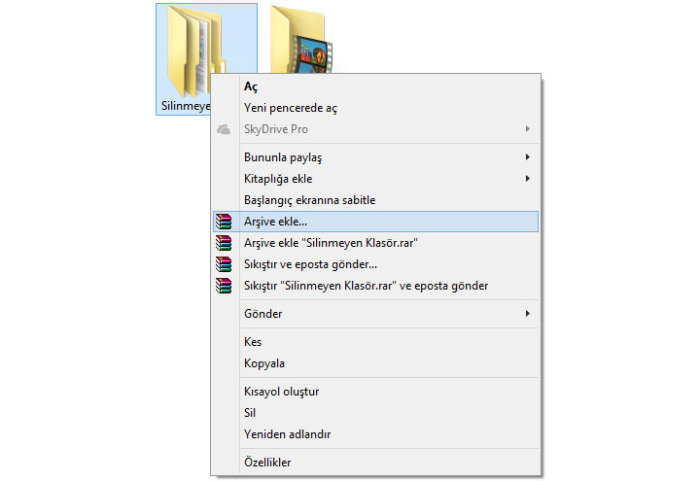

2- Sağ tuşa tıklayıp : Arşive Ekle tuşuna basıyoruz. (Dikkat! “Arşive ekle “silinmeyen klasör adı” değil direkt arşive ekle seçeneğine basın.

3- Karşınıza çıkan ekranda sağ tarafta “Arşivleme Seçenekleri” bölümünde ilk madde “Arşivledikten Sonra Dosyaları Sil” seçeneğine tıklayın.